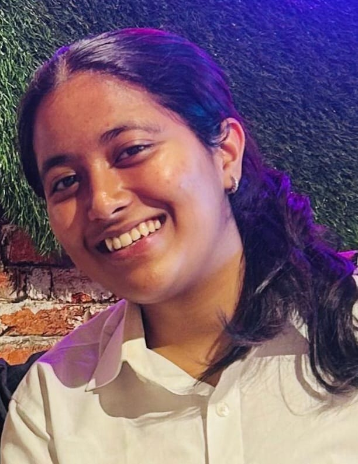

Avani Satam

Summary
As a third-year engineering student specializing in Artificial Intelligence and Data Science, I am passionate about harnessing the power of data to drive innovative solutions. With a solid foundation in Python programming and a burgeoning expertise in data analysis, I am eager to apply my skills in a professional setting.
I am actively seeking internship opportunities to contribute to impactful projects, grow my technical acumen, and collaborate with industry experts. My goal is to leverage my academic knowledge and practical skills to make meaningful contributions to the field of AI and data.
Education
-
Bachelor of Engineering in Artificial Intelligence and Data Science
Mumbai University
2022 - Present
Currently in 3rd year of a 4-year course
-
Junior College
Pace Junior College: 2020 - 2022
-
High School
NES High School: Completed in 2020
Skills
- Programming Languages: Intermediate Python Development ⭐⭐⭐
- Web Development: Currently learning HTML, CSS, and JavaScript ⭐⭐
- Data Analysis: Currently learning data analysis techniques and tools ⭐⭐
- AI Tools: Experience with ChatGPT prompting and other AI tools ⭐⭐⭐
- Communication: Actively improving communication and public speaking skills ⭐⭐⭐
Awards & Achievements
- The Complete Artificial Intelligence and ChatGPT Course (Udemy)
Successfully completed this comprehensive course, gaining advanced knowledge in artificial intelligence and ChatGPT technologies.
- Cambridge English Learner's Course
Completed 3 levels with distinction, demonstrating exceptional proficiency in English, as recognized by Cambridge University.
Hobbies
{kind=link}